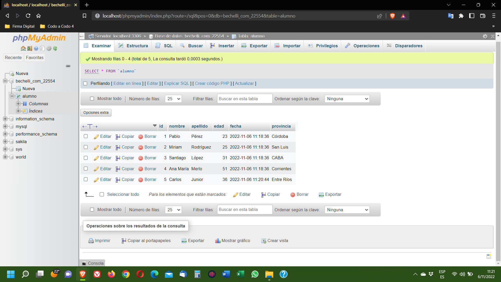

La tarea establece que la entrega "deberás mandar captura de la base de datos con los registros insertados, además del back up en un archivo comprimido".
Dado que no hay manera de colocar dentro del "Diario" un archivo, como solicita la consigna para la entrega de la tarea, he colocado mis archivos en esta Web para que puedan descargarla:
A continuación se presenta la imagen tomada de la Base de Datos:
A continuación se presenta el SQL que la genera y completa con 5 registros la Base de Datos:
-- phpMyAdmin SQL Dump
-- version 5.2.0
-- https://www.phpmyadmin.net/
--
-- Servidor: localhost:3306
-- Tiempo de generación: 06-11-2022 a las 15:46:56
-- Versión del servidor: 8.0.31
-- Versión de PHP: 8.1.12
SET SQL_MODE = "NO_AUTO_VALUE_ON_ZERO";
START TRANSACTION;
SET time_zone = "+03:00";
--
-- Base de datos: `bechelli_com_22554`
--
CREATE SCHEMA IF NOT EXISTS `bechelli_com_22554`;
ALTER DATABASE `bechelli_com_22554` CHARACTER SET utf8mb4
COLLATE utf8mb4_general_ci;
USE `bechelli_com_22554`;
-- --------------------------------------------------------
--
-- Estructura de tabla para la tabla `alumno`
--
CREATE TABLE `alumno` (
`id` int NOT NULL,
`nombre` varchar(40) NOT NULL,
`apellido` varchar(40) NOT NULL,
`edad` tinyint NOT NULL,
`fecha` timestamp NOT NULL DEFAULT CURRENT_TIMESTAMP,
`provincia` varchar(30) NOT NULL
) ENGINE=InnoDB DEFAULT CHARSET=utf8mb3;
--
-- Volcado de datos para la tabla `alumno`
--
INSERT INTO `alumno` (`id`, `nombre`, `apellido`, `edad`, `fecha`,
`provincia`) VALUES
(1, 'Pablo', 'Pérez', 23, '2022-11-06 11:18:36', 'Córdoba'),
(2, 'Miriam', 'Rodríguez', 25, '2022-11-06 11:18:36', 'San Luis'),
(3, 'Santiago', 'López', 31, '2022-11-06 11:18:36', 'CABA'),
(4, 'Ana María', 'Merlo', 51, '2022-11-06 11:18:36', 'Corrientes'),
(5, 'Carlos', 'Junior', 36, '2022-11-06 11:20:44', 'Entre Ríos');
--
-- Índices para tablas volcadas
--
--
-- Indices de la tabla `alumno`
--
ALTER TABLE `alumno`
ADD PRIMARY KEY (`id`);
--
-- AUTO_INCREMENT de las tablas volcadas
--
--
-- AUTO_INCREMENT de la tabla `alumno`
--
ALTER TABLE `alumno`
MODIFY `id` int NOT NULL AUTO_INCREMENT, AUTO_INCREMENT=6;
COMMIT;